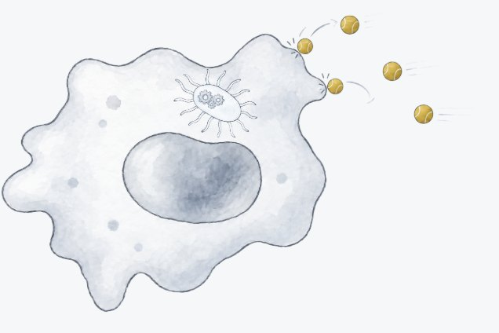
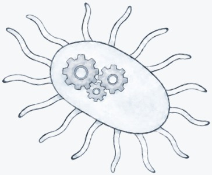
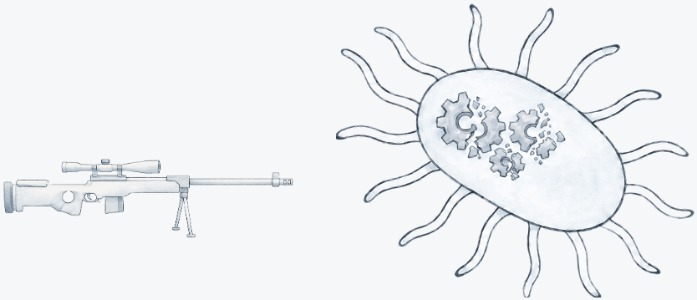
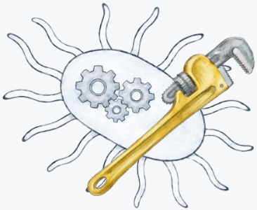
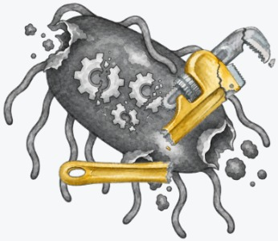

The end of the antibiotic era
Modern medicine relies on the effectiveness of antibiotics. They are true wonder drugs, but—as a class—antibiotics are not a perfect answer to the management of pathogenic bacteria, for at least three major reasons.
- iAntibiotics are usually insufficiently selective, indiscriminately killing most bacteria they encounter, including beneficial ones. Killing beneficial bacteria causes harm. More selective, better targeted anti-pathogen therapies are needed.
- iiAntibiotics have great difficulty in dealing with pathogens where they hide. Antibiotics easily kill free-floating planktonic bacteria, but pathogens commonly employ evasion strategies such as secreting and coating themselves with protective biofilms, or invading host cells and subverting them to act as protective, nutrient-rich havens. Most antibiotics have difficulty penetrating and/or killing once inside these niches (see Figure 3).
- iiiFinally, bacteria quickly evolve resistance, and “wonder drugs” lose their effectiveness. Society constantly needs new antibiotics, in a never-ending arms race, but, for economic reasons, few new antibiotics are being developed. This phenomenon of antimicrobial resistance (AMR)1 threatens to undo much of the medical progress of the 20th Century and cause literally trillions of dollars of economic harm.2

Collectively, these three reasons render antibiotics far less clinically successful than might be expected. Indeed, antibiotics fail with shocking frequency and deadly consequences. For serious infections, treatment failure rates have grown as high as 20% (sometimes much higher). When antibiotics fail, risks to patients and costs to healthcare systems rise dramatically. We estimate that antibiotic treatment failure costs the US healthcare system a conservative $27B every year in excess costs.
Disabling bacterial defenses instead of outright killing will transform infection control
We propose a completely new approach to handling bacterial infection that we are convinced can be as transformative in the 21st Century as antibiotics were in the 20th: rather than kill bacteria outright with a chemical, we propose a therapeutic strategy of disabling bacterial defenses so that the immune system can handle the infection. Disabling bacterial defenses weakens bacteria against the immune system, which then clears the infection much more easily than it otherwise would. In principle, many bacterial enzymes are suitable targets for this strategy, particularly those involved in stress responses which are primarily triggered by immune assault. In this way, a bacterial defense disabler deprives bacteria of a critical response to the immune system (see Figure 4).




We see profound advantages implied by this “disable defenses” strategy, which can succeed in each of the three ways antibiotics fall short:
- iAchieve exquisite selectivity in targeting pathogens. This works by taking advantage of millions of years of co-evolution between the immune system and the bacteria our bodies host. The human immune system has a remarkable ability to distinguish between desirable bacteria, which it identifies as benign, and pathogens, against which it mounts a response. Weakening bacterial defenses matters hardly at all for the benign and healthy bacteria, but tremendously for the pathogens facing immune attack. The disable-defenses strategy works in unison with the immune system to achieve the desired selectivity which antibiotics lack.
- iiTarget pathogens where they hide. Most antibiotics in the armamentarium have been co-opted from natural sources. They were then optimized by scientists to increase the spectrum of bacteria they could kill. They were not optimized, either by evolution or by chemists, to penetrate intracellular host niches or biofilms. A bacterial defense disabler could and should be designed with these goals in mind.
- iiiSidestep the problem of antibiotic resistance. A bacterial defense disabler would, by definition, target bacterial machinery never previously targeted by a drug, rendering most current resistance mechanisms irrelevant. It could treat susceptible and resistant infections alike.